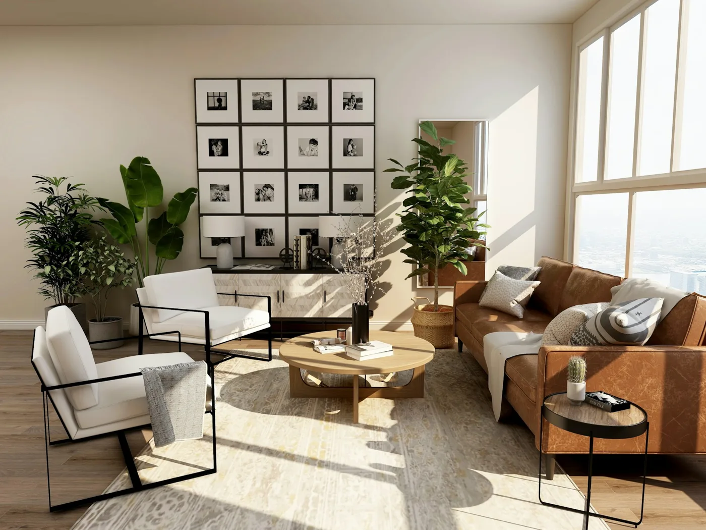

Você pode chegar como está.
Sem um discurso pronto ou a obrigação de estar bem. O que você consegue trazer já é um começo.
PSICOLOGIA EM MARINGÁ · UM TEMPO PARA SI
Entre o que você sente e o que ainda não consegue dizer, existe um espaço de escuta. E ele pode ser seu.
Presencial em Maringá, PR & onlineModalidades ilustrativasMarina AlbuquerquePerfil fictício · Psicologia

LUZ, PRESENÇA E UM POUCO DE SILÊNCIO.Um encontro.
Novas formas de se perceber.
01 — O CUIDADO
Para respirar. Para reconhecer o que pesa. Para olhar para a própria história com mais gentileza. A terapia pode ser um lugar de encontro com tudo isso — no seu ritmo.
Sem um discurso pronto ou a obrigação de estar bem. O que você consegue trazer já é um começo.
Experiências, relações e sentimentos têm lugar na conversa. Sem reduzir você a uma única dificuldade.
Um processo de compreensão e novas possibilidades, respeitando suas escolhas e singularidades.
presença
& escuta.
02 — QUEM ESCUTA
Olá, sou Marina Albuquerque.
Acredito em um cuidado que abre espaço para a pessoa inteira: suas dúvidas, seus vínculos, suas contradições e os caminhos que ainda deseja descobrir.
Nesta proposta de atendimento, a escuta é o ponto de partida. Um convite para compreender a própria experiência e construir formas mais conscientes de estar na vida.
Uma apresentação demonstrativa. Marina é uma personagem fictícia. Formação, abordagem e registro profissional serão incluídos com os dados verificados de cada cliente.
03 — O QUE PODE ENCONTRAR ESPAÇO
Não é preciso esperar tudo ficar difícil para olhar para si. Algumas das conversas que podem fazer parte desse caminho.
A sensação de estar sempre antecipando o próximo problema, a dificuldade de desacelerar ou o excesso de cobranças podem ganhar espaço na conversa.
Olhar para a forma como você se relaciona, comunica suas necessidades e estabelece limites pode ampliar a compreensão dos seus vínculos.
Reconhecer desejos, padrões e valores próprios pode ajudar você a compreender o que faz sentido em sua vida, sem precisar encontrar respostas imediatas.
Encerramentos, decisões e novas fases podem trazer sentimentos diferentes ao mesmo tempo. Há espaço para olhar para eles com cuidado.
Temas ilustrativos. Público e áreas de atuação devem ser confirmados na personalização.
UMA LEMBRANÇA PARA LEVAR COM VOCÊ
Você não precisa ter
todas as palavras.
Podemos começar
com as que você tem.
04 — O PRIMEIRO PASSO
Você não precisa decidir tudo agora. O primeiro contato é uma oportunidade de entender o atendimento e esclarecer suas dúvidas.
Uma mensagem para perguntar sobre horários, modalidade e funcionamento. Sem precisar contar sua história por mensagem.
Converse sobre a abordagem, as condições do atendimento e o que você procura neste momento.
Com as dúvidas esclarecidas, você decide se deseja agendar um primeiro encontro.
Modalidade, duração das sessões e disponibilidade serão informadas pelo profissional responsável.
05 — COM TRANQUILIDADE
Algumas respostas para tornar
o começo mais claro.
Não é necessário preparar uma fala. Você pode começar pelo que está presente no momento, inclusive pela dificuldade de colocar algo em palavras.
A busca por terapia pode envolver sofrimento, mas também o desejo de se conhecer, compreender relações ou refletir sobre escolhas e mudanças.
Neste exemplo, o consultório apresenta atendimento presencial em Maringá e online para adultos. Modalidade e público são ilustrativos e serão confirmados com o profissional real.
Essas informações são combinadas diretamente com o profissional no primeiro contato. Nesta demonstração, não há agenda nem atendimento disponível.
O sigilo e seus limites devem ser explicados pelo profissional no início do atendimento. Este site demonstrativo não coleta relatos pessoais nem realiza sessões.
06 — PERTO DE VOCÊ
Um consultório em Maringá, com tempo reservado para acolher sua história. E, para quem está longe, a possibilidade do encontro online.
CONSULTÓRIO · EXEMPLO DE APRESENTAÇÃO
Maringá, Paraná
Explore a região no mapaAo carregar, você se conecta ao Google.O mapa mostra Maringá como referência. Nenhum ponto indica um consultório real. Na versão do cliente, mapa e rota levam ao endereço confirmado.
07 — QUANDO FIZER SENTIDO PARA VOCÊ
O primeiro passo não precisa ser grande.
Pode ser apenas uma conversa.